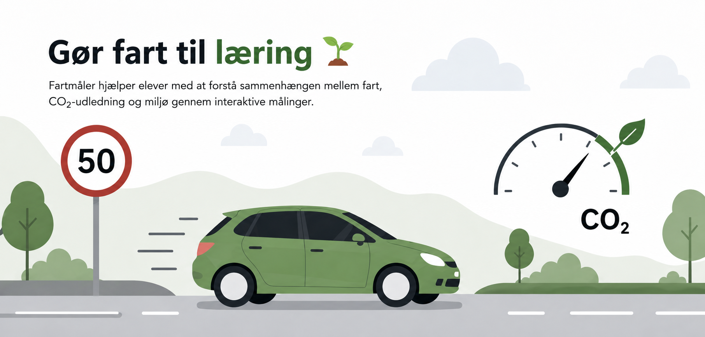

Smart Fartmåler hjælper elever med at forstå sammenhængen mellem hastighed, data, præcision og CO₂ gennem en sjov og praktisk målebane.

Elever ser hvordan hastighed og kørselsadfærd kan kobles til miljø.
Grupper kan sammenligne resultater og lære af hinandens målinger.
Score og leaderboard gør læringen mere motiverende og spilbaseret.
Data kan bruges til refleksion, forbedring og forståelse af målinger.
Elever sender en bil gennem målebanen. Systemet beregner hastighed ud fra afstand og tid, og viser resultatet digitalt med feedback, score og CO₂-information.
Start med at vælge den rigtige gruppe og session.
Kør bilen gennem målebanen, så sensorerne registrerer tiden.
Få vist hastighed, score, feedback og relevant CO₂-information.
Resultater vises kun, hvis underviseren har slået leaderboard til.